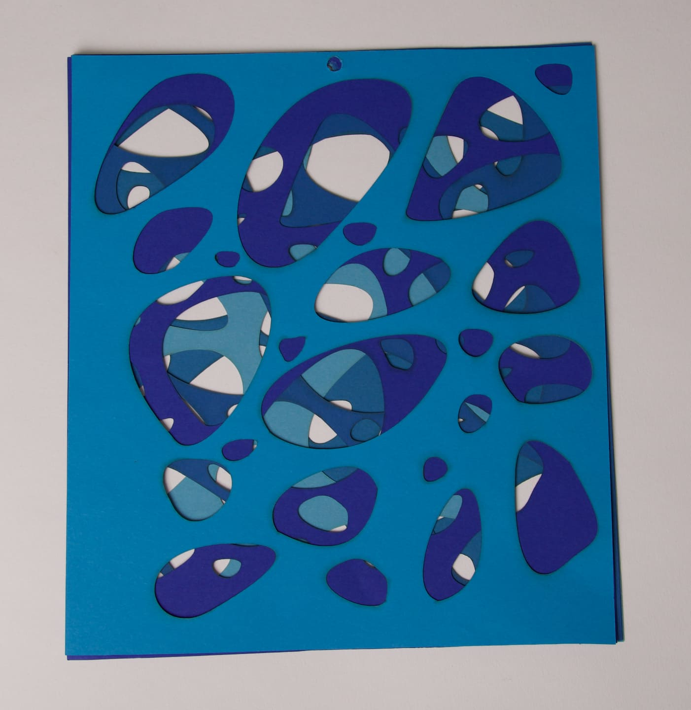
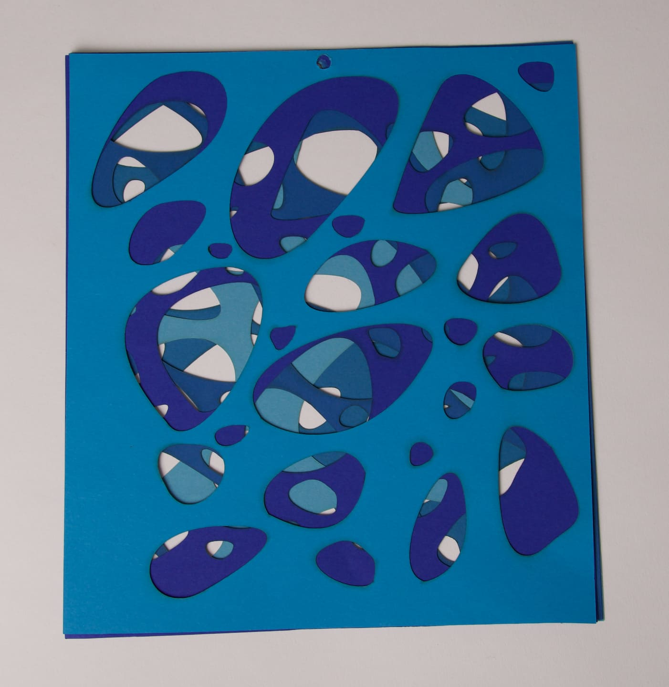

This project was the final assignment in the first semester for the subject Fundamentals of Design. It aims to reflect the forms of water and waves, which are constantly in motion in reality, creating new shapes and shades of blue. The goal is to demonstrate how life flows like a river and how small decisions can alter the entire picture of a situation. The concept is based on dissecting five different existing layers and arranging them in an indeterminate manner. This arrangement results in a new overall image or pattern. This not only symbolizes the dynamics of water but also represents the complexity of the river of life, where every decision, no matter how small, can influence the overall situation. The constant flow and change are portrayed through the various layers and arrangements, forming a coherent yet constantly evolving image.